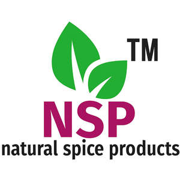

Trade Mark Journal No.2026/008 20 February 2026
UK00004300987 26 November 2025 (30,31)

- Class 30
- Spices, powdered spices, whole spices, masalas, curry powders, chilli powder, turmeric powder, coriander powder, sambar powder, rasam powder, chicken masala, mutton masala, garam masala, chaat masala, biryani masala; pre-mixed spice blends for cooking; ready-made curry mixes; packaged foodstuffs made from spices; dried herbs, dried vegetables, and dried fruits used as spices or seasonings; condiments, sauces, and seasonings containing spices; snack mixes containing spices or herbs; instant cooking mixes, instant soup mixes containing spices; herbal teas and infusions containing spices; spice pastes and spice sauces; flavored rice mixes and ready-to-cook spice-flavored grains; seasoned nuts or legumes containing spices.
- Class 31
- Unprocessed agricultural, horticultural and forestry products; dried chillies, turmeric roots, coriander seeds, cumin seeds, fenugreek seeds, mustard seeds, cardamom pods, black peppercorns, cloves, cinnamon sticks, nutmeg, and other whole spices; fresh or dried herbs; fresh fruit; raw ginger, raw garlic, and other root vegetables used as spices; raw grains, pulses, lentils, chickpeas, rice, and other seeds for culinary use; unprocessed nuts; other raw or unprocessed plants and spices intended for culinary or herbal use.
AMRAVATHI GLOBAL TRADING LTD